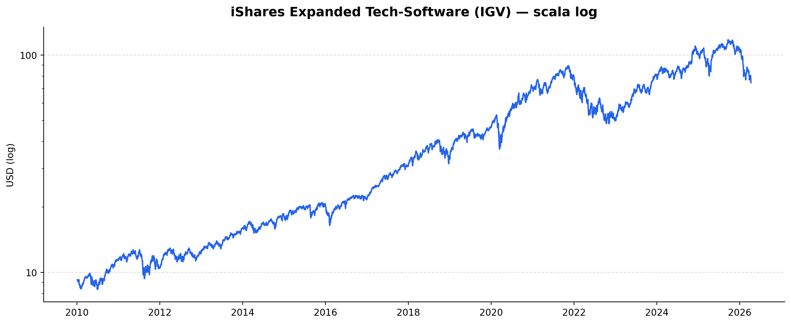
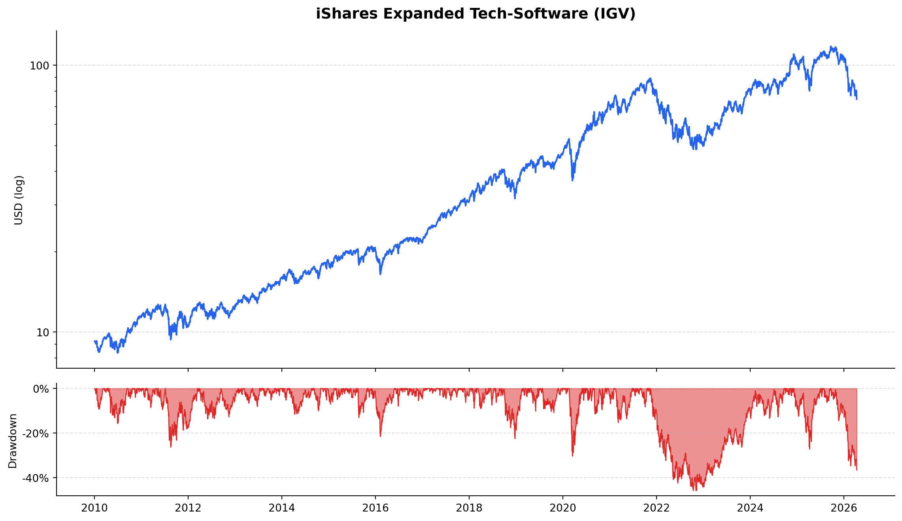
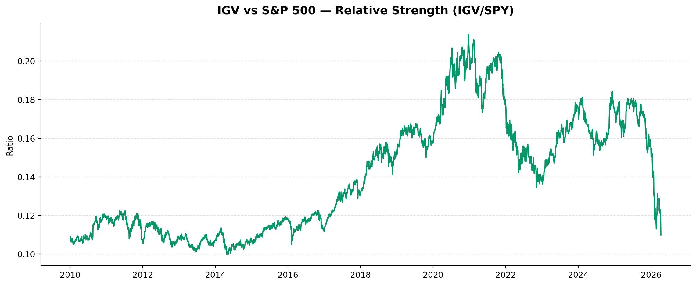

Economia Digitale e Rischio Sistemico dell’IA
Il crollo del software tech dopo l’emergenza Anthropic: analisi di IGV
Intelligenza artificiale
Mercati finanziari
Tecnologia
L’annuncio del modello Anthropic Claude Mythos Preview — capace di individuare migliaia di vulnerabilità software su scala globale — ha innescato un vertice d’emergenza tra Fed, Tesoro USA e i grandi istituti di credito sistemici.
Paolo Volterra ![]()
Sommario
L’annuncio del modello Anthropic Claude Mythos Preview — capace di individuare migliaia di vulnerabilità software su scala globale — ha innescato un vertice d’emergenza tra Fed, Tesoro USA e i grandi istituti di credito sistemici. L’onda d’urto si è trasferita immediatamente sui mercati: l’indice iShares Expanded Tech-Software (IGV) ha perso oltre il 6% in due sessioni. Questo documento contestualizza l’evento nel ciclo di lungo periodo del settore software, analizza la struttura dei drawdown storici e misura la forza relativa di IGV rispetto all’S&P 500.
Parole chiave
intelligenza artificiale, rischio sistemico, cybersecurity, IGV, mercati finanziari, Anthropic, Fed
1 Contesto: il paradosso di Anthropic
Nell’aprile 2026, Anthropic ha reso noti i risultati del Project Glasswing: il modello Claude Mythos Preview ha individuato migliaia di vulnerabilità software finora sconosciute — tra cui un bug di 27 anni nel kernel OpenBSD e un difetto di 16 anni in alcuni videogiochi diffusissimi. L’accesso al modello è stato limitato a 40 organizzazioni selezionate (Amazon, Apple, Microsoft, JPMorgan, tra le altre).
Il paradosso è strutturale: uno strumento nato per chiudere le porte sul retro dei sistemi diventa, nelle mani sbagliate, un grimaldello universale. Il Segretario al Tesoro Scott Bessent e il presidente della Fed Jerome Powell hanno convocato con pochissimo preavviso i CEO delle banche sistemicamente importanti — Fraser (Citi), Pick (Morgan Stanley), Moynihan (BofA), Solomon (Goldman) — per valutare la resilienza operativa del sistema finanziario a fronte di attacchi potenziati dall’IA.
La reazione dei mercati è stata immediata: l’indice IGV (iShares Expanded Tech-Software ETF, il principale benchmark del software globale) ha ceduto il 6,1% in due sedute. I cali più pesanti hanno colpito ServiceNow (−7,9%), Palantir (−7,3%), Workday (−5,1%), Oracle (−4,0%) e Salesforce (−3,1%).
2 Setup e dati
3 Andamento di lungo periodo di IGV
In scala logaritmica il trend secolare di IGV è inequivocabile: dai circa 20 USD del 2010 agli oltre 80 USD attuali, il settore software ha moltiplicato il proprio valore di un fattore 4×, con un ritmo di crescita composto annuo (CAGR) intorno al 10–12%.
La scala log permette di confrontare episodi di correzione di diversa ampiezza su un piano omogeneo. Si identificano tre grandi fasi:
- 2010–2018 — Espansione costante, volatilità contenuta, guidata dal passaggio al modello SaaS e dalla migrazione cloud.
- 2018–2022 — Accelerazione marcata (stimoli fiscali post-Covid, ZIRP), seguita da una brusca inversione nel 2022 con il rialzo dei tassi Fed.
- 2022–2026 — Ripresa trainata dall’entusiasmo per l’IA generativa, con una nuova discontinuità nell’aprile 2026 legata al rischio cibernetico.
4 Drawdown storico

Il pannello inferiore mostra il drawdown dal massimo mobile: quanto il prezzo corrente si discosta dal picco precedente in ogni punto del tempo.
Due episodi spiccano per profondità:
2022 — Il drawdown massimo ha toccato circa −45%, il più severo dal 2010. La causa: la stretta monetaria della Fed (+525 bp in 18 mesi) ha penalizzato duramente i titoli a lunga duration come il software, le cui valutazioni si basano su flussi di cassa lontani nel tempo.
Aprile 2026 — Il drawdown in corso, pur di entità limitata rispetto al 2022, è di natura diversa: non è guidato da tassi d’interesse ma da una ri-valutazione del rischio operativo dell’intero settore. Se i sistemi software delle banche e delle infrastrutture critiche sono potenzialmente esposti a vulnerabilità sfruttabili da agenti IA avanzati, le aziende che vendono sicurezza e automazione (Palantir, ServiceNow) subiscono un duplice shock: perdita di fiducia nel prodotto e rischio di obsolescenza accelerata.
5 Forza relativa IGV/SPY

Il rapporto IGV/SPY misura se il software tech sovra- o sotto-performa il mercato azionario allargato. Valori crescenti indicano leadership settoriale; valori decrescenti indicano rotazione verso altri settori.
Tre fasi distinte:
- 2010–2019 — Lenta ma costante espansione della forza relativa: il software cresce più dell’indice generale, grazie alla trasformazione digitale delle imprese.
- 2020–2021 — Picco durante la pandemia: il remote working e la digitalizzazione forzata portano IGV a una sovraperformance storica.
- 2022–oggi — Discesa del ratio e successivo parziale recupero. La fase attuale è critica: il ratio si trova in una zona di incertezza dove il mercato sta ridefinendo il premio di rischio del software, alla luce sia dell’IA generativa (potenziale distruzione creativa dei fornitori tradizionali) sia dei nuovi rischi cibernetici.
Il caso Meta illustra la biforcazione in atto: mentre IGV scendeva del 6%, Meta saliva del +6,5% annunciando un CapEx tra 115 e 135 miliardi di dollari sull’infrastruttura IA. Il mercato premia chi costruisce l’IA e punisce chi vende sicurezza contro di essa — almeno nel breve periodo.
6 Conclusioni
L’evento Anthropic/Glasswing non è una correzione tecnica ordinaria. Introduce una nuova classe di rischio nel pricing del settore software:
Rischio di obsolescenza asimmetrica — I modelli IA di nuova generazione potrebbero rendere superflui interi layer di sicurezza tradizionale, erodendo i moat di aziende come Palantir e ServiceNow.
Rischio sistemico finanziario — La Fed e il Tesoro hanno elevato la cybersecurity IA a tema di stabilità macroprudenziale. Questo apre la strada a regolamentazione settoriale accelerata.
Biforcazione competitiva — Il mercato distingue sempre più nettamente tra builder (Meta, Anthropic, Microsoft) e defender (incumbent della sicurezza). Chi non si posiziona nella prima categoria rischia di trovarsi sul lato sbagliato della discontinuità.
Per il sistema bancario italiano ed europeo, la domanda rilevante è se l’infrastruttura IT degli istituti — spesso basata su sistemi legacy datati anche decenni — sia adeguatamente presidiata rispetto a strumenti di ricerca delle vulnerabilità come Mythos. Il vertice d’emergenza di Washington è un segnale che anche le autorità di vigilanza europee difficilmente potranno ignorare a lungo.